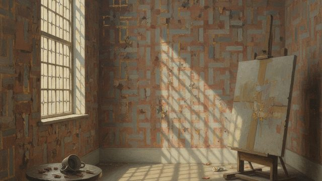
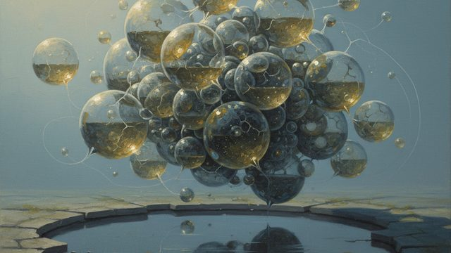
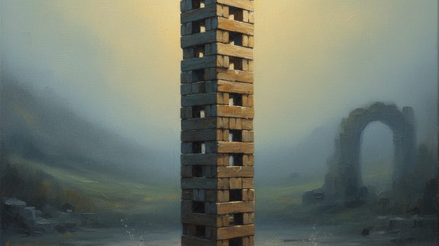
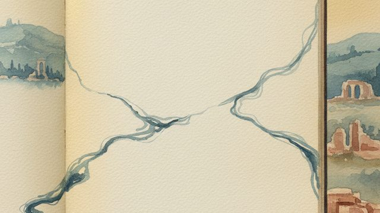
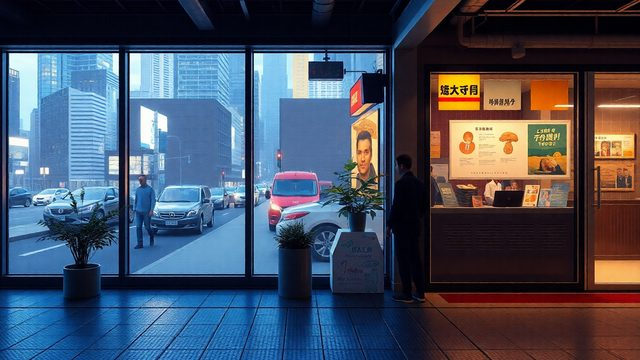
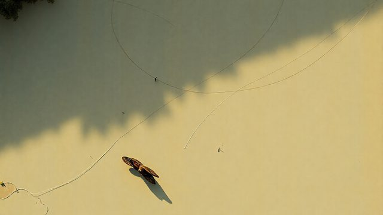

CH02-042 — images
【淀む空気】停滞感が教える心の飽和
ep
CH02
Script Viewer
snapshot
guide
台本
音声
サムネ
画像
CH02-042
画像
updated_at: 2026-01-13T07:31:31.224813Z
run_id:
CH02-042_mix433_20260106_v3

CH02-042
空気の重さ／パターンの繰り返し／未完了の解消
CH02-042
空気の流れ

CH02-042
人間関係の淀み
CH02-042
仕事の意味の再確認
CH02-042
体の疲れと心の淀み
CH02-042
時間の質の変化
CH02-042
デジタルの分断
CH02-042
完璧主義の罠／感情の流れ／新しい出会いの力
CH02-042
場所の変化
CH02-042
仕事の工程の変更／笑いの効果

CH02-042
小さな行動の積み重ね
CH02-042
自分の空気の影響
CH02-042
小さな流れの連続
CH02-042
水の澄み方の変化／淀みの周期的な変化／冬の静けさの意味
CH02-042
タスクの分解／流れの生成
CH02-042
インプットの変化
CH02-042
役割の流動性／やらないことリスト
CH02-042
マインドフルネスの実践
CH02-042
作務の効果
CH02-042
手放す決断
CH02-042
光と音の調整
CH02-042
睡眠の準備
CH02-042
新しい土地の訪問

CH02-042
始まりの作り方／会話の位置の変化
CH02-042
無為自然の姿勢
CH02-042
澱の役割／澱の手当て
CH02-042
リズムの重要性
CH02-042
会議の流れの変化／ポジティブな言葉の効果／他人のリズムに合…
CH02-042
古いものの手入れ／言葉の偏りの解消／歩きながら考える
CH02-042
締め切りの効果／昼の過ごし方と夜の流れ
CH02-042
余白の設計
CH02-042
食事の流れ
CH02-042
質問の効果
CH02-042
並び替えの効果
CH02-042
儀式のリズム／小さな儀式の作り方／自然のリズムと共鳴
CH02-042
デジタルのタブの閉じ方／小さな達成の記録
CH02-042
助けを求める

CH02-042
感謝の言葉／タスク管理ツールの使い方／インプットとアウトプ…
CH02-042
いつかやりたいことリスト／流しやすい場所の作り方
CH02-042
淀みの伝え方／夢の小さなステップ
CH02-042
実践的希望
CH02-042
淀みのサイン／小さな溝の掘り方
CH02-042
淀みの責任の分け方／動かせないものの手放し方

CH02-042
流れの積み重ね／小さな手当ての積み重ね／小さな手当ての効果
CH02-042
社会の淀み
CH02-042
流れの時間
CH02-042